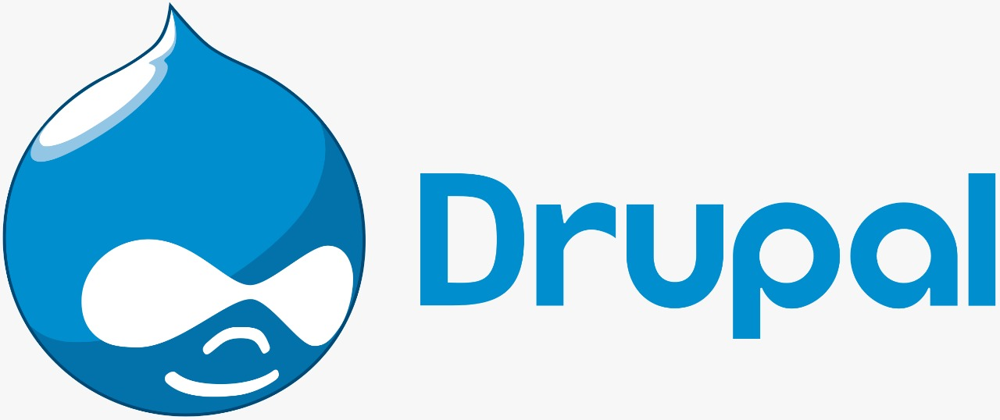

Drupal is a free and open-source web content management framework written in PHP and distributed under the GNU General Public License. Drupal provides a back-end framework for at least 2.3% of all websites worldwide – ranging from personal blogs to corporate, political, and government sites. Systems also use Drupal for knowledge management and for business collaboration.
As of December 2019, the Drupal community comprised more than 1.39 million members, including 117,000 users actively contributing, resulting in more than 44,000 free modules that extend and customize Drupal functionality, over 2,800 free themes that change the look and feel of Drupal, and at least 1,300 free distributions that allow users to quickly and easily set up a complex, use-specific Drupal in fewer steps.
The standard release of Drupal, known as Drupal core, contains basic features common to content-management systems. These include user account registration and maintenance, menu management, RSS feeds, taxonomy, page layout customization, and system administration. The Drupal core installation can serve as a simple website, a single- or multi-user blog, an Internet forum, or a community website providing for user-generated content.
Drupal also describes itself as a Web application framework. When compared with notable frameworks Drupal meets most of the generally accepted feature requirements for such web frameworks.
Although Drupal offers a sophisticated API for developers, basic Web-site installation and administration of the framework require no programming skills.
Drupal runs on any computing platform that supports both a web server capable of running PHP and a database to store content and configuration.
Know More About Druple
Know More About Druple